Approach
The blue plate is fixed, and the green and red plates are aligned to it. Every image is first converted to floating point so that JPEGs and TIFFs are treated identically. An offset is applied with a circular shift, which wraps a few rows and columns around to the far side of the image. All scoring is done only on the interior of the plates: a margin of 10% of the height and width is trimmed from every side before the two plates are compared.
Both the L2 similarity metric and the NCC similarity metric are implemented, computed over the interior, and turned into a loss. For single-scale alignment, every integer offset in a window of ±15 pixels in each direction is tried. The metric is evaluated for each of those, and the offset with the lowest loss gives the final image. This is good enough for the low-resolution JPEGs.
For the full-resolution TIFFs, we use an image pyramid. The first thing we do is downsample by 2 until the shorter side falls under 400 pixels. We then run the exhaustive search, and the offset found there is doubled and used as the center of a small ±3 search at the next finer level. This repeats down to the original image resolution.
Single-scale alignment
The low-resolution JPEG plates are aligned with one exhaustive search over a ±15 pixel window. The offsets are displayed as well as the losses.
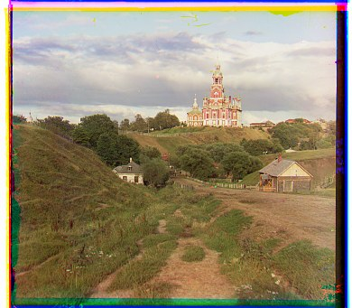
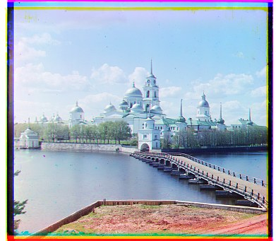
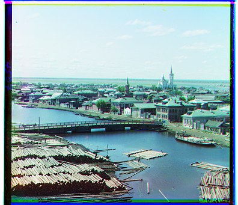
| Image | Metric | G offset | G loss | R offset | R loss |
|---|---|---|---|---|---|
| Cathedral | NCC | (2, 5) | -0.9602 | (3, 12) | -0.9056 |
| Cathedral | L2 | (2, 5) | 1747.6 | (3, 12) | 3755.5 |
| Cathedral | Edge NCC | (2, 5) | -0.7388 | (3, 12) | -0.6300 |
| Monastery | NCC | (2, -3) | -0.9396 | (2, 3) | -0.7941 |
| Monastery | L2 | (2, -3) | 893.1 | (2, 3) | 3313.3 |
| Monastery | Edge NCC | (2, -3) | -0.8834 | (2, 3) | -0.8072 |
| Tobolsk | NCC | (3, 3) | -0.9207 | (3, 6) | -0.8574 |
| Tobolsk | L2 | (3, 3) | 1051.4 | (3, 6) | 3287.4 |
| Tobolsk | Edge NCC | (2, 3) | -0.8244 | (3, 6) | -0.7791 |
Multi-scale alignment
The full-resolution TIFF plates are aligned with an image pyramid. The table lists NCC and L2 on raw pixel values, and NCC on edge maps.
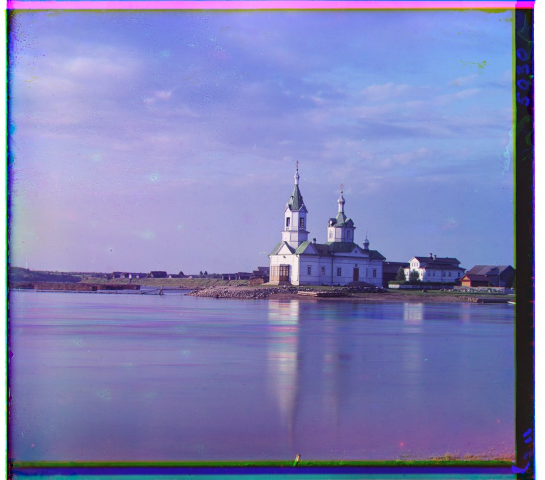
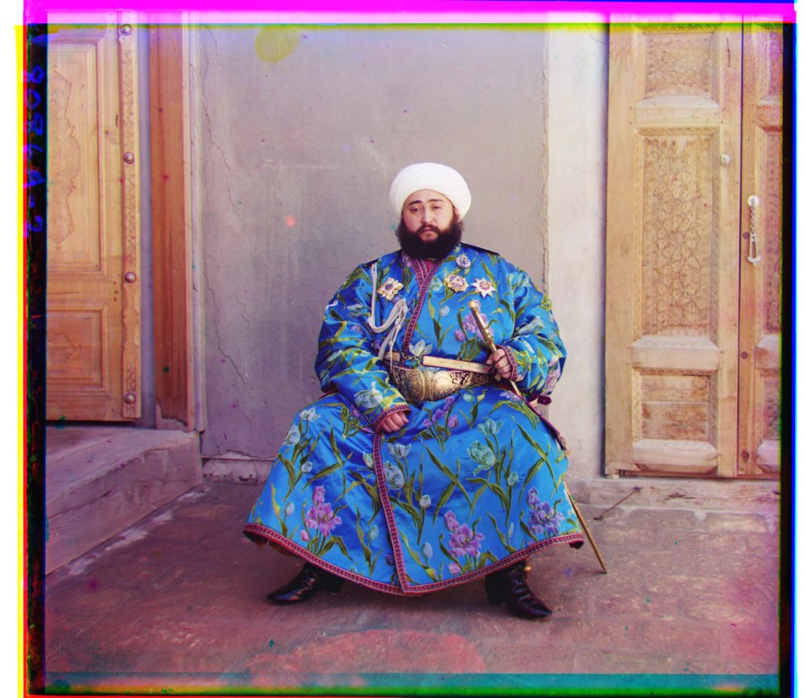
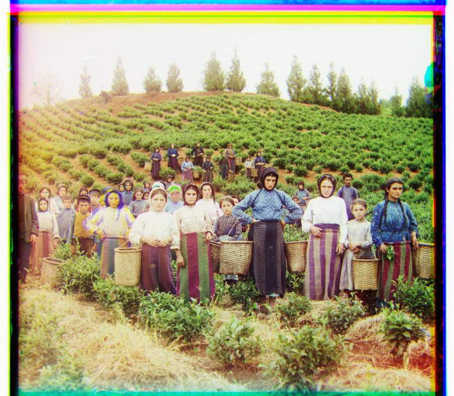
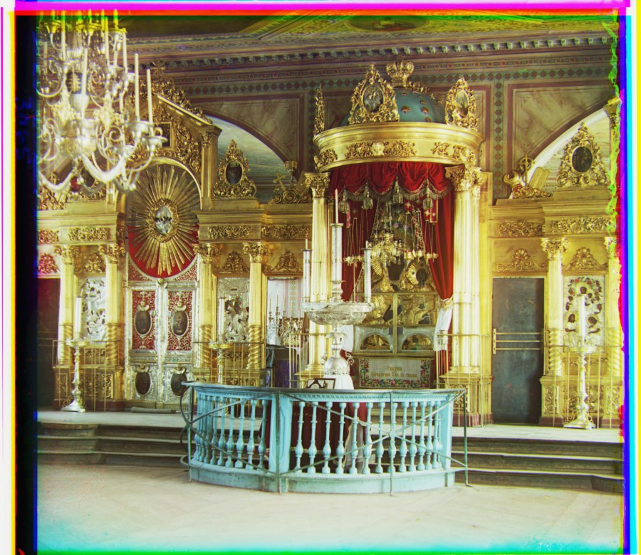
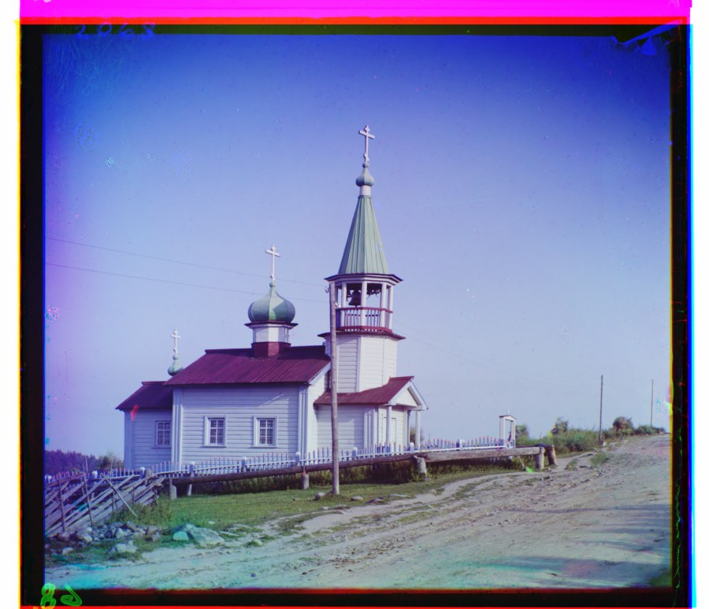
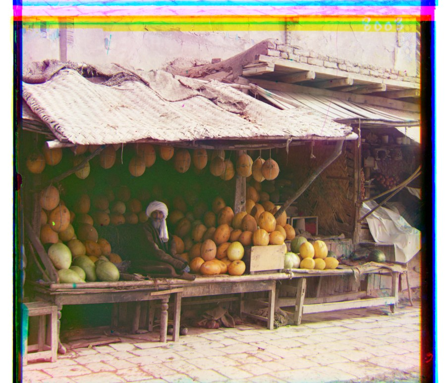
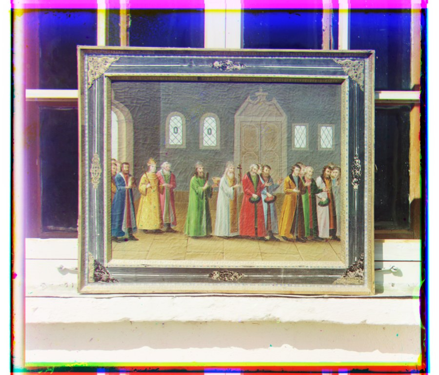
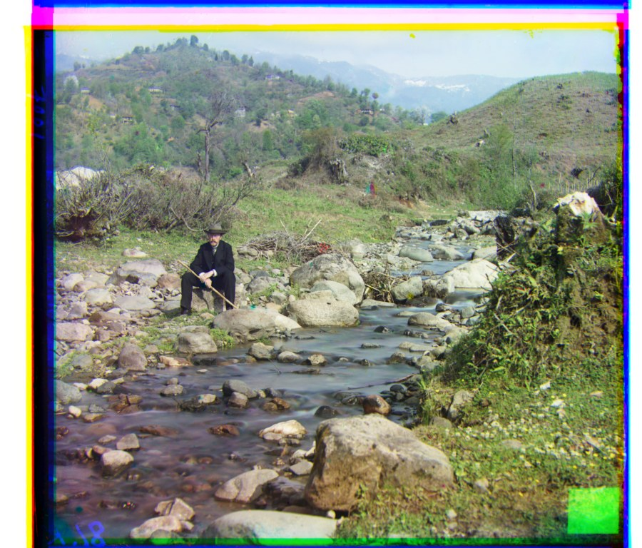
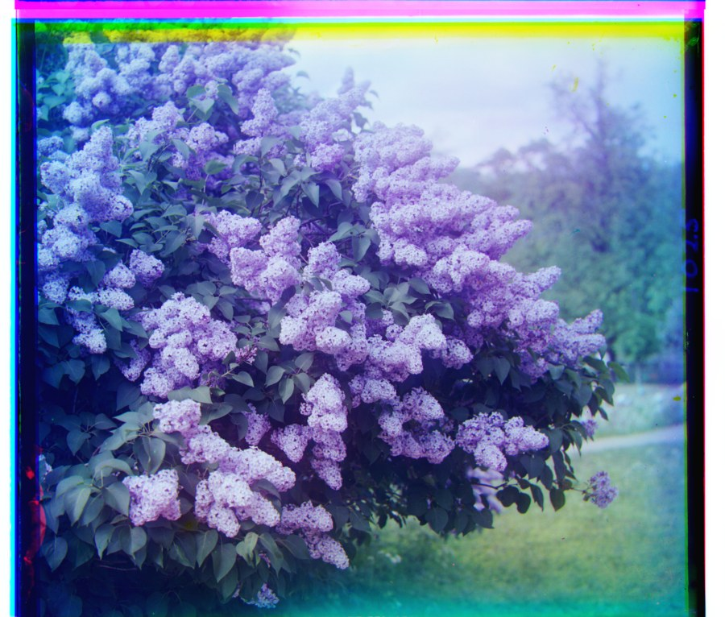
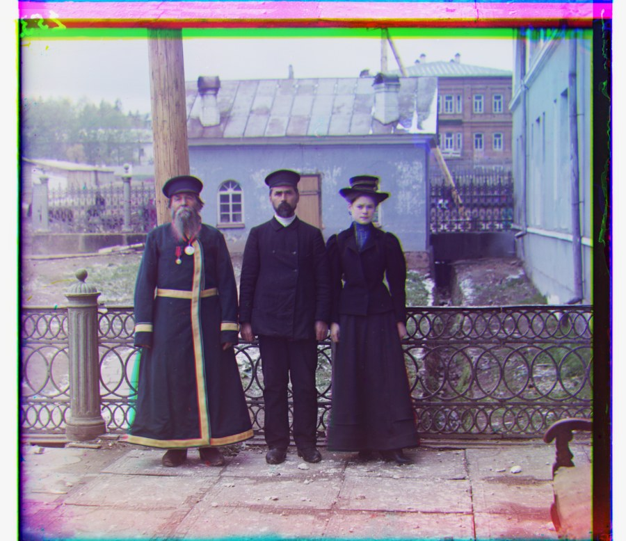
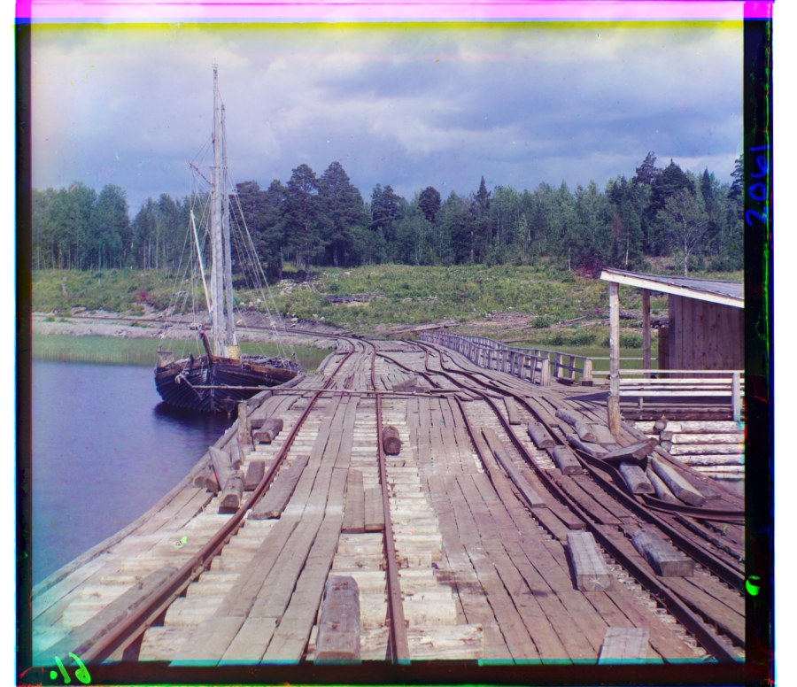
| Image | Plate size | Levels | G (NCC) | R (NCC) | G (L2) | R (L2) | G (edge NCC) | R (edge NCC) |
|---|---|---|---|---|---|---|---|---|
| Church | 3634×3202 | 4 | (4, 25) | (-4, 58) | (4, 25) | (-4, 58) | (4, 25) | (-4, 58) |
| Emir of Bukhara | 3702×3209 | 5 | (24, 49) | (-205, 141) | (24, 49) | (57, 103) | (24, 49) | (40, 107) |
| Harvesters | 3683×3218 | 5 | (17, 60) | (13, 124) | (16, 59) | (13, 124) | (17, 60) | (14, 124) |
| Icon | 3741×3244 | 5 | (17, 41) | (23, 89) | (17, 41) | (23, 90) | (17, 42) | (23, 90) |
| Ilemselga | 3800×3270 | 5 | (7, 40) | (11, 130) | (7, 39) | (11, 130) | (7, 40) | (11, 131) |
| Melons | 3770×3241 | 5 | (10, 82) | (13, 178) | (11, 82) | (13, 178) | (10, 80) | (13, 177) |
| Religious painting | 3742×3193 | 4 | (3, 28) | (7, 68) | (3, 28) | (7, 68) | (6, 30) | (6, 70) |
| Self portrait | 3810×3251 | 5 | (29, 79) | (37, 176) | (29, 79) | (37, 176) | (29, 78) | (37, 175) |
| Siren | 3817×3250 | 5 | (-6, 49) | (-25, 96) | (-6, 49) | (-25, 96) | (-6, 49) | (-24, 96) |
| Three generations | 3714×3209 | 5 | (14, 53) | (11, 112) | (14, 53) | (11, 112) | (12, 54) | (9, 111) |
| Wharf | 3761×3244 | 5 | (-7, 15) | (-16, 83) | (-7, 15) | (-16, 83) | (-7, 15) | (-16, 83) |
Failures
Emir of Bukhara did not align on raw pixel values. The result is close, but it is still visibly off. Aligning on edge maps instead, described below, fixes the alignment.
Bells and whistles
Edge-based alignment. Instead of comparing raw brightness, each pyramid level is converted to a gradient magnitude map, computed from scratch with central differences in x and y, and NCC is run on that map. Edges are in the same place on each plate regardless of the brightness of a region, so this fixes the issue that broke the original alignment.
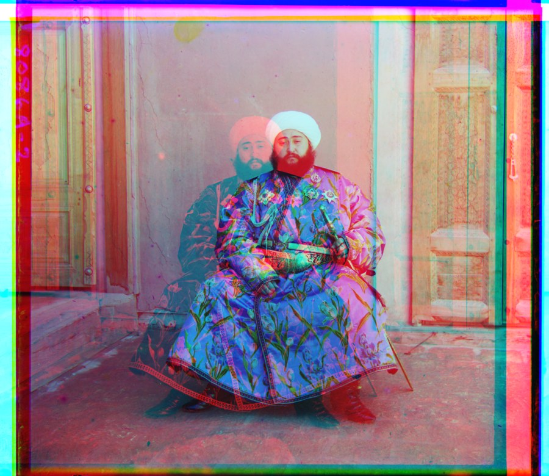